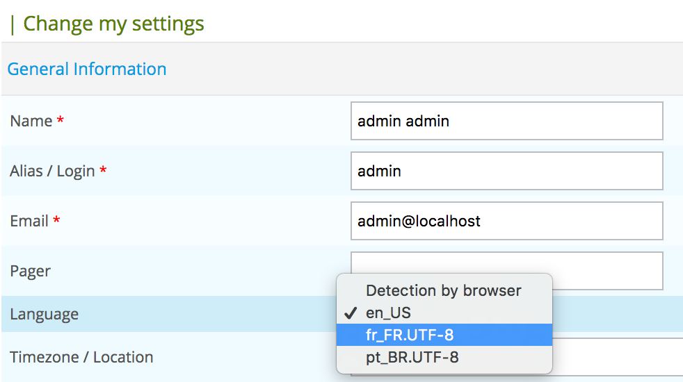

How to translate Centreon¶
If you want to contribute to translate Centreon, this new tutorial is for you! Discover how to translate Centreon web interface and how to help us to add new language in Centreon.
Install translation environment¶
Download the following archive and copy it on a Linux server.
Execute the following commands:
$ unzip centreon-translation.zip
$ cd centreon-translation
Your environment to translate Centreon is now ready.
First generation¶
During the first generation, the script will clone Centreon sources from GitHub on your server.
Execute the following command:
$ bash make-translation.sh
At the end of execution, two files are available:
- messages.pot to translate Centreon web interface menu and forms
- help.pot to translate help tooltips in configuration forms
Rename messages.pot to messages.po and help.po to help.po
You can now start translation of Centreon by editing files with a PO file editor like poedit.
Note
Keep always your *.po files for next translation.
Use your translation¶
On your Centreon server, install gettext:
$ sudo yum install gettext
Create the locale directory for your Centreon:
$ sudo mkdir -p /usr/share/centreon/www/locale/`locale | grep LC_MESSAGES | cut -d \" -f 2`/LC_MESSAGES
Note
/usr/share/centreon is the Centreon installed directory.
If you want to translate Centreon in other language than use by your Centreon server, you have to define manually the locale.
For example, for Brazilian users, execute the following command:
$ sudo mkdir -p /usr/share/centreon/www/locale/pt_BR/LC_MESSAGES
Compile translated files:
$ msgfmt messages.po -o messages.mo
$ msgfmt help.pot -o help.mo
Copy compiled translated files:
$ sudo cp *.mo /usr/share/centreon/www/locale/`locale | grep LC_MESSAGES | cut -d \" -f 2`/LC_MESSAGES
Change rights on directory:
$ sudo chown -R apache.apache /usr/share/centreon/www/locale/`locale | grep LC_MESSAGES | cut -d \" -f 2`
Restart Apache:
$ sudo service httpd restart
Connect to your Centreon web interface, edit your profil and select new language:
{kind=link}
Save the form and access to another menu, your interface will be translated.
Upgrade translation¶
Centreon developers released every month a new version of Centreon Web. So translation could be modified with every new release.
To maintain translation up-to-date follow this steps:
$ bash make-translation.sh
At the end of execution, two files up-to-date are available:
- messages.pot to translate Centreon Web interface menu and forms
- help.pot to translate help tooltips in configuration forms
Merge this files with previous translation (messages.po and help.po):
$ msgmerge help.po help.pot -o new_help.po
$ msgmerge messages.po messages.pot -o new_messages.po
Follow chapter “Use your translation” to upgrade translation for Centreon.
Participate to Centreon project¶
Once your translation is up-to-date, you can ask to the Centreon team to add your translation to Centreon project. This will allow for all person using Centreon to have access to your translation on their Centreon platform.
- Create an account on GitHub
- Fork centreon/centreon project on GitHub
- Add your translated *.mo and *.po files to lang/<your_lang>/LC_MESSAGES directory
- Commit your change on your project
- Create a pull request on centreon/centreon project
- We will add your translation to Centreon.
Thank you for your help!